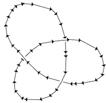
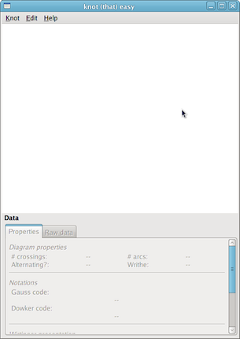
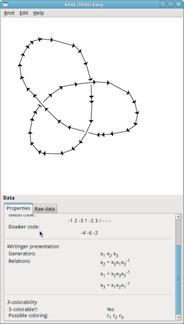
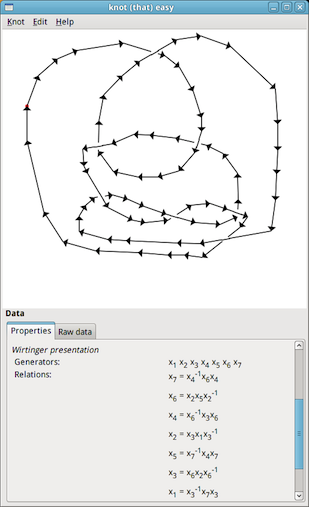

Knot (that) Easy

Knot (that) Easy can be used to obtain useful information about a mathematical knot by first being able to "draw" a regular diagram of the knot inside the application.
This is different than in most other knot theory software that employ a codification (sometimes even specific to the application) and are not very graphical.
In Knot (that) easy you can use the mouse to "draw" a regular diagram of the knot and when a crossing is detected you can specify if it is an under-crossing or an over-crossing by left or right-clicking.
Features
- Regular diagrams of the knot are created using the mouse in a very graphical manner.
- Knot (that) easy works with oriented links.
- It looks pretty nice compared to other knot theory software, with antialiased lines and a modern UI.
- Knot (that) easy should work on most platforms without trouble because it is written in Python and uses the PyGTK+ library.
- Performs mirroring and orientation reversing on the diagrams.
- Calculates alternance, number of crossings and arcs and writhe of a diagram.
- Outputs Gauss and Dowker codes of the diagram.
- Gives the Wirtinger presentation of the link's knot group.
- Determines (very inefficiently) if the knot is 3-colorable and gives a possible coloring for each arc.
- Last, but not least, Knot (that) easy is open source and licensed under the WTFPL (Do What The Fuck You Want To Public License). You are free to change it or, hopefully, help to make it better.
Screenshots
-

Knot (that) easy - Main window
-

Showing Gauss, Dowker code, Wirtinger presentation, and 3-colorability info for a trefoil knot.
-

This is a ugly unknot (a link isotopic to the trivial knot).
Although no simplifications are made, notice how easily you can remove generators from the Wirtinger presentation and obtain a knot group isomorphic to Z.
Development & Contact
Knot (that) easy development happens in GitHub at http://github.com/jorgeatorres/knot-that-easy.
You can obtain a copy of the latest source code with the following command:
$ git clone git@github.com:jorgeatorres/knot-that-easy
You are more than welcome to join and give Knot (that) easy some love.
If you have any questions or would like to contact the author, you can do it at jtorresh at gmail.com.
References / Related Software
Knot Theory sites
Other Knot Theory Software